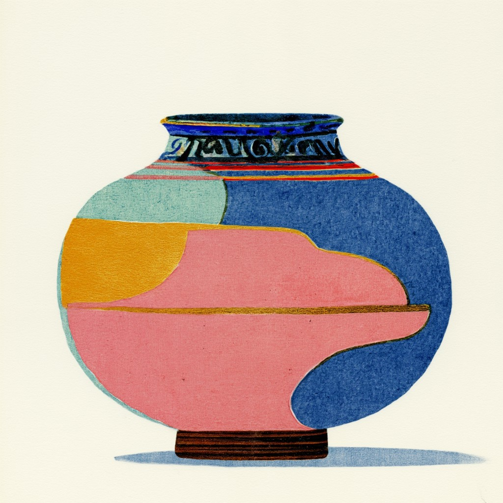
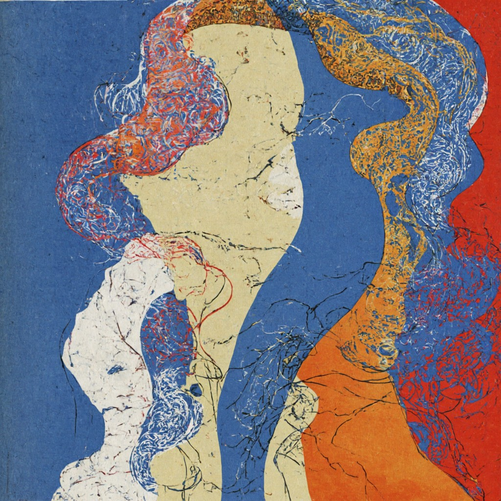
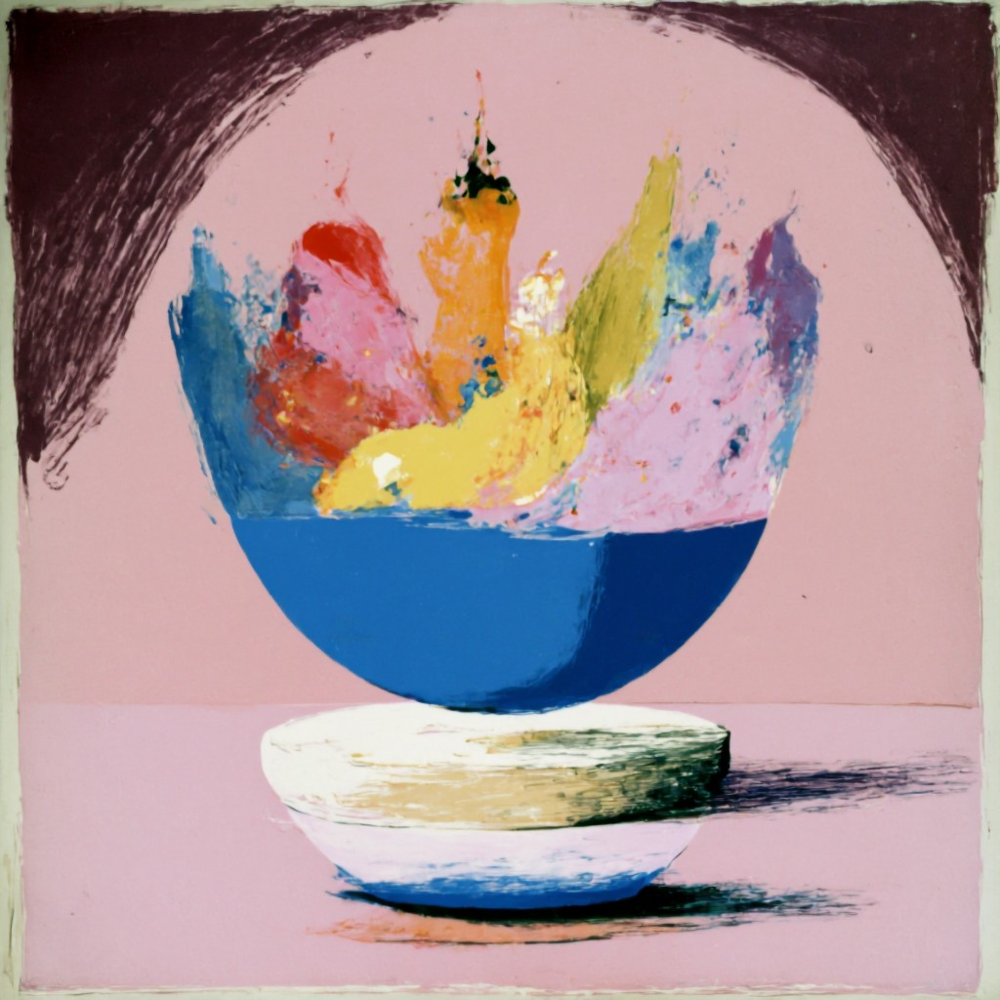
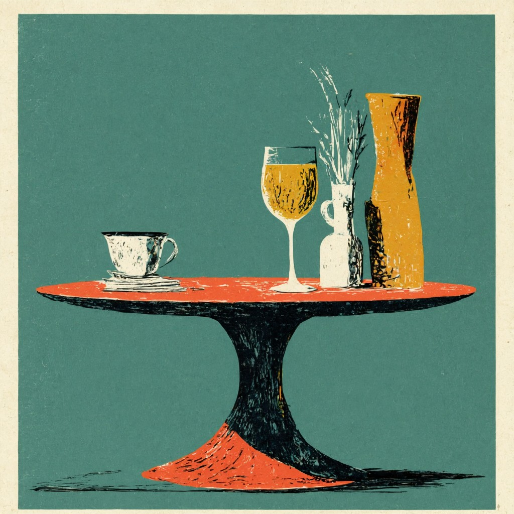
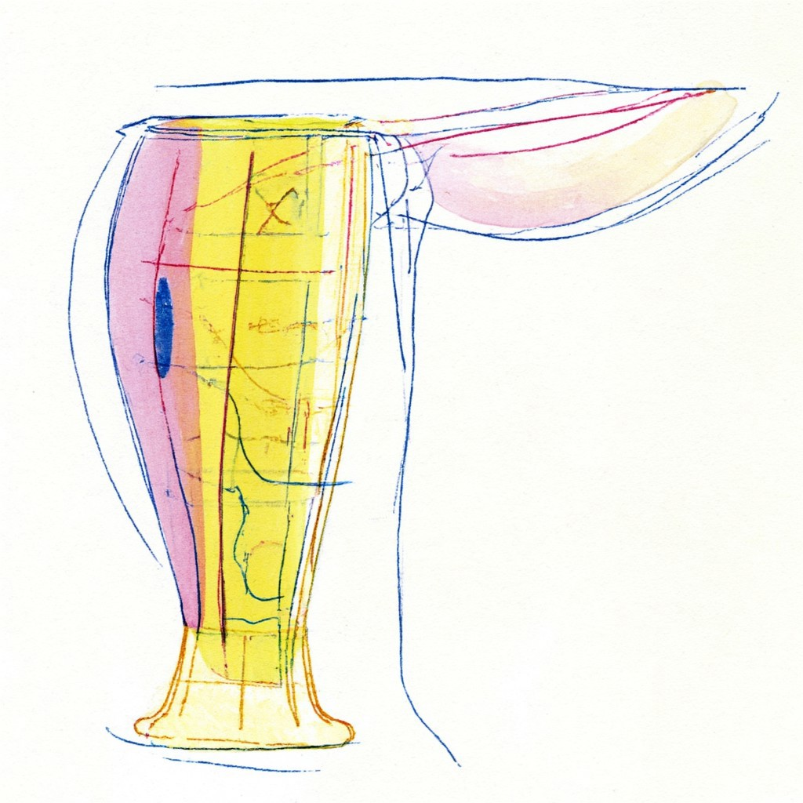
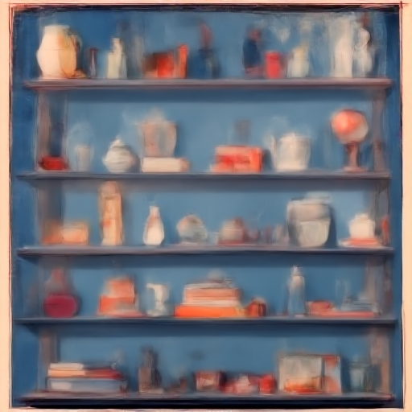

01
Pause with the object
Look closely before deciding. Notice wear, memory, and the object moments that reveal potential.
SLOO PHILOSOPHY
Sloo is a daily practice: pause, look again, and reimagine. An old mug can become a flower pot. A worn sweater can be tailored into a dog sweater. What looks finished may only be waiting for its next form.
Begin Ritual

01
Look closely before deciding. Notice wear, memory, and the object moments that reveal potential.
02
Ask what else it could become: mug to planter, sweater to dog knit, jar to archive.
03
Repair, alter, or combine it into a new form. Let creativity decide before goodbye.
Every object carries memory in its surface: scratches, repairs, wear, and care. Sloo invites you to read those object moments and respond creatively. Reuse is not only practical - it is a way to keep meaning in motion.

Ready to reimagine

Sloo is about intentional cycles. Keep what still serves. Transform what can evolve. Release only what has truly completed its role.

Objects to Repair

Objects to Rework

Objects in Transition

Object Archive

“I used to throw things out too quickly. Now I pause, look again, and usually find another life for the same object.”